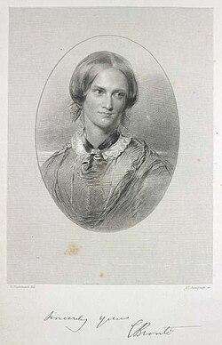
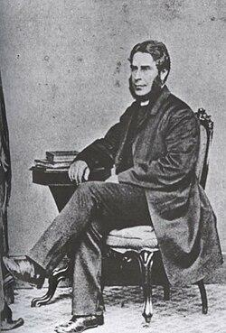
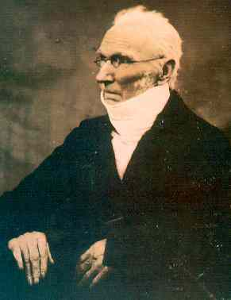
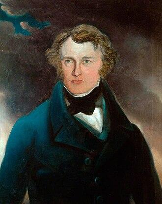
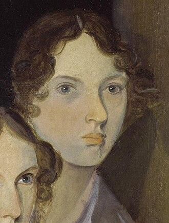
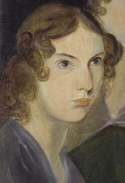
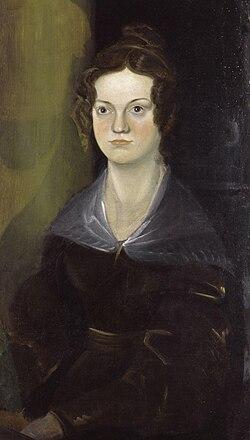

Charlotte
Charlotte Brontë (Brontë)
- Date of birth:
- 21 04 1816
- Date of death:
- 31 03 1855
- Age:
- 38 years 11 months 10 days
Relatives

Husband 29 06 1854Arthur Bell Nicholls06 01 1819 - † 02 12 1906 (87 years 10 months 26 days)
Father 🩸 50%Patrick Brontë17 03 1777 - † 07 06 1861 (84 years 2 months 20 days)- Mother 🩸 50%Maria Branwell15 04 1783 - † 15 09 1821 (38 years 5 months )

Brother 🩸 50%Patrick Branwell Brontë26 06 1817 - † 24 09 1848 (31 years 2 months 28 days)- Sister 🩸 50%Maria Brontë23 04 1814 - † 06 05 1825 (11 years 13 days)
- Sister 🩸 50%Elizabeth Brontë08 02 1815 - † 15 06 1825 (10 years 4 months 7 days)

Sister 🩸 50%Emily Jane Brontë30 07 1818 - † 19 12 1848 (30 years 4 months 19 days)
Sister 🩸 50%Anne Brontë17 01 1820 - † 28 05 1849 (29 years 4 months 11 days)
Photos

Biography
Taught at Roe Head, then spent two years in Brussels at the Pensionnat Heger, which she reworked twice into fiction. In 1846 she found Emily's poems by accident and pushed all three sisters into print under the names Currer, Ellis and Acton Bell; the volume sold two copies.
Jane Eyre followed in 1847 and made her famous while nobody knew who she was.
Novels
- Jane Eyre (1847)
- Shirley (1849)
- Villette (1853)
- The Professor (written first, published 1857)
Reader, I married him.
She did, in June 1854 — her father's curate, after refusing him once and her father refusing him twice. She died the following March, in the early months of a pregnancy, the last of the six children to go.
Additional details
- Birth
- Place: Thornton, Yorkshire
- Death
- Place: Haworth, Yorkshire
Family details
- Marriage with: Arthur Bell
- Marriage
- Place: Haworth, Yorkshire
- Marriage